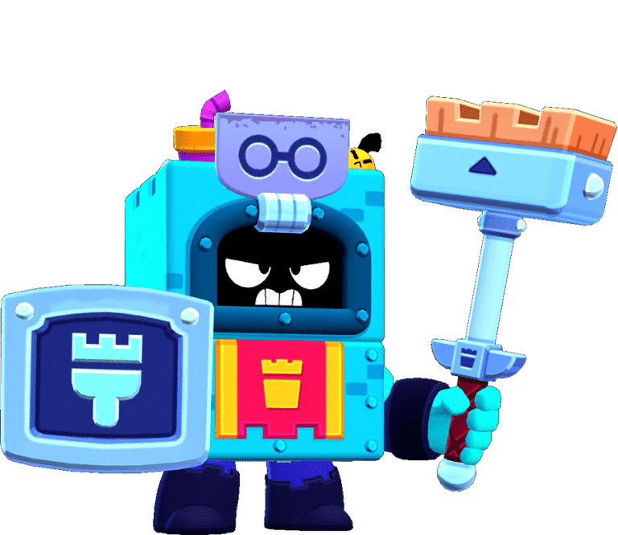

¿Quién es Ash?
El sueño de Ash era ser actor, pero lejos de recibir aplausos, su ingrato trabajo consiste en limpiar el parque. Se ha metido en una papelera para protegerse de los cristales rotos y de las mordedoras de rata. Normal que esté de un humor de perros.
sh es un Brawler Épico que se pudo desbloquear como recompensa de Brawl Pass en el nivel 30 en la temporada 8: Érase una vez un Brawl, o comprándolo con 925 créditos en el camino Starr. Ash tiene una alta salud, una producción de daño y una velocidad de movimiento variables, y un rango de ataque corto. La barra de furia de Ash se llena en una cierta cantidad cada vez que inflige o recibe daño y le da aumentos de velocidad de Ash y aumentos de daño que aumentan cuanto más se llena su barra de furia. Ataca rompiendo su escoba en el suelo, enviando una onda de choque penetrante que inflige más daño cuanto más se llena la barra de furia de Ash. Su Súper genera cinco ratas robóticas con poca salud que buscan al enemigo más cercano y explotan al contacto, causando más daño dependiendo de la cantidad de barra de Ash que esté llena.
|  |
NIVEL DE FUERZA 11 |
Sus gadgets
TRANQUILIZANTE: Ash tiene que tranquilizarse de cuando en cuando. Eso no quiere decir que se le haya pasado el enfado, claro está. Si su furia está completamente cargada, recuperará 2496 puntos de salud cuando este gadget aparezca. Cuanta menos furia tenga, menos puntos de salud recuperará |
PLÁTANO PODRIDO: Ash pierde un 25% de salud y gana al instante un 40% de furia. |
Sus habilidades estelares
 |
PRIMER ESCOBAZO: Cuando alcanza a un rival con su ataque totalmente cargado, Ash se enfurece aún más. Su furia aumenta en un 200%. |
 |
FUERA DE SÍ: Cuando Ash está ya que le hierve la sangre, barre un 30% más rápido. Aunque esté recargando su furia, al atacar coje velocidad |
 Braian Arancibia
Braian Arancibia Aya El Baarar
Aya El Baarar